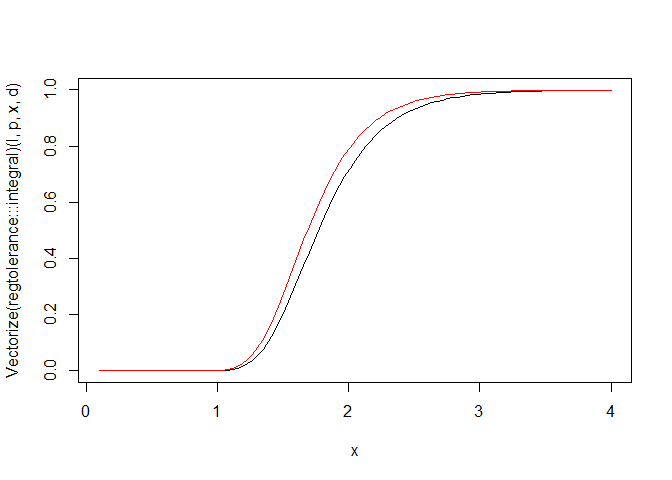

Two-sided tolerance factor for linear regression
We denote by \(\chi^2_{\nu, \lambda}(p)\) the \(100p\%\)-quantile of the non-central Chi-squared distribution \(\chi^2_{\nu, \lambda}\) with degrees of freedom number \(\nu\) and non-centrality parameter \(\lambda\).
As shown in Krishnamoorthy & Mathew’s book, the two-sided \((p, 1-\alpha)\)-tolerance factor for a linear regression model is the solution \(k\) of the equation
\[ \frac{2}{d}\int_0^\infty \Pr\left(\chi^2_\ell > \frac{\ell\chi^2_{1,x^2}(p)}{k^2} \right) \phi\left(\frac{x}{d}\right) \mathrm{d}x = 1-\alpha \] where \(\ell\) is the corank of the \(X\) matrix, and \(d\) is a number calculated from the desired values of the predictors (as we will see on the example).
Below we provide a Rcpp implementation of the integral. We use the boost library (offered by the BH package) to evaluate the integrand, and the package RcppNumerical to evaluate the integral, after transforming this integral to an integral on \((0,1)\).
// [[Rcpp::depends(BH)]]
// [[Rcpp::depends(RcppEigen)]]
// [[Rcpp::depends(RcppNumerical)]]
#include <RcppNumerical.h>
using namespace Numer;
#include <Rcpp.h>
using namespace Rcpp;
#include <boost/math/distributions/non_central_chi_squared.hpp>
#include <boost/math/distributions/complement.hpp>
#include <boost/math/distributions/normal.hpp>
#include <boost/math/distributions/chi_squared.hpp>
// [[Rcpp::export]]
double integrand(double u, double l, double p, double k, double d){
double x = u/(1-u);
double q = boost::math::quantile(boost::math::non_central_chi_squared(1, x*x), p);
double pchisq = boost::math::cdf(boost::math::complement(boost::math::chi_squared(l), l*q/k/k));
double w = 2*boost::math::pdf(boost::math::normal(0, d), x);
return w * pchisq / ((1-u)*(1-u));
}
class Integrand: public Func
{
private:
double l;
double p;
double k;
double d;
public:
Integrand(double l_, double p_, double k_, double d_) : l(l_), p(p_), k(k_), d(d_) {}
double operator()(const double& u) const
{
return integrand(u, l, p, k, d);
}
};
// [[Rcpp::export]]
Rcpp::NumericVector integral(double l, double p, double k, double d){
Integrand f(l, p, k, d);
double err_est;
int err_code;
const double res = integrate(f, 0, 1, err_est, err_code);
Rcpp::NumericVector out = Rcpp::NumericVector::create(res);
out.attr("err_est") = err_est;
out.attr("err_code") = err_code;
return out;
}Example
We test our function on Example 3.1 of Krishnamoorthy & Mathew’s book. We firstly calculate the value of \(d\).
dat <- data.frame(
x1 = c(80, 93, 100, 82, 90, 99, 81, 96, 94, 93, 97, 95, 100, 85, 86, 87),
x2 = c(8, 9, 10, 12, 11, 8, 8, 10, 12, 11, 13, 11, 8, 12, 9, 12),
y = c(2256, 2340, 2426, 2293, 2330, 2368, 2250, 2409, 2364, 2379, 2440, 2364, 2404, 2317, 2309, 2328)
)
fit <- lm(y ~ x1+x2, data=dat)
X <- model.matrix(fit)
H <- chol2inv(chol(t(X)%*%X)) # inverse of X'X
## we want the tolerance interval at x1=88 and x2=9
xnew <- c(1, 88, 9)
d <- sqrt(c(t(xnew) %*% H %*% matrix(xnew)))No we solve the equation. The Rcpp function integral is available in a package I called regtolerance.
f <- function(k, l, p, d, alpha){
regtolerance:::integral(l, p, k, d) - (1-alpha)
}
## Calculation of the (0.9, 0.95)-tolerance factor
( k <- uniroot(f, l=nrow(dat)-3, p=0.9, d=d, alpha=0.05, lower=2, upper=3)$root )
## [1] 2.602851Now we get the tolerance interval as follows:
estimates <- fit$coefficients
yhat <- c(t(xnew) %*% matrix(estimates))
yhat + c(-1,1)*k*sigma(fit)
## [1] 2271.436 2356.594Bounding the tolerance factor
Lower bound
For a fixed number of degrees of freedom, the Chi-squared distribution is stochastically increasing in its non-centrality parameter. Therefore \[ \frac{2}{d}\int_0^\infty \Pr\left(\chi^2_\ell > \frac{\ell\chi^2_{1,x^2}(p)}{k^2} \right) \phi\left(\frac{x}{d}\right) \mathrm{d}x \leq \Pr\left(\chi^2_\ell > \frac{\ell\chi^2_{1}(p)}{k^2} \right) \]
Thus, the value of \(k\) satisfying \[ \Pr\left(\chi^2_\ell > \frac{\ell\chi^2_{1}(p)}{k^2} \right) = 1-\alpha \] is lower than the tolerance factor.
l <- nrow(dat)-3
p <- 0.9
alpha <- 0.05
# lower bound
sqrt(l*qchisq(p,1)/qchisq(1-alpha, l, lower.tail=FALSE))
## [1] 2.443276curve(Vectorize(regtolerance:::integral)(l, p, x, d),
from=0.1, to=4, ylim=c(0,1))
curve(pchisq(l*qchisq(p,1)/x^2, l, lower.tail=FALSE), add=TRUE, col="red")
Upper bound
The Lee & Mathew approximation of \(k\) is known to be generally higher than \(k\). It is returned by the function kLM below.
kLM <- function(p, alpha, l, d){
e <- (1+d^2)^2/d^4
f <- d^4/(1+d^2)
delta <- d^2*((3*d^2+sqrt(9*d^4+6*d^2+3))/(2*d^2+1))
sqrt(e*f/(1+delta)*qchisq(p, 1, delta)*qf(1-alpha, e, l))
}
kLM(p, alpha, l, d)
## [1] 2.606926Put things together
p = 0.9
alpha = 0.05
xnew = c(1, 88, 9)
X <- model.matrix(fit)
H <- chol2inv(chol(t(X)%*%X))
d <- sqrt(c(t(xnew) %*% H %*% matrix(xnew)))
l <- nrow(X)-ncol(X)
k_low <- sqrt(l*qchisq(p,1)/qchisq(alpha, l))
k_upp <- kLM(p, alpha, l, d)
( k <- uniroot(f, l = l, p = p, d = d, alpha = alpha,
lower = k_low, upper = k_upp,
extendInt = "upX")$root )
## [1] 2.602831References
Krishnamoorthy & Mathew (2009). Statistical Tolerance Regions. Wiley.